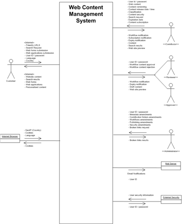
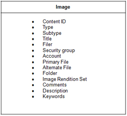
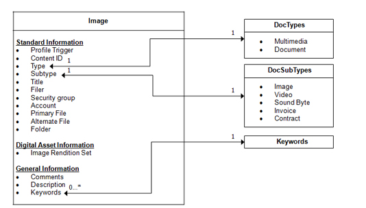
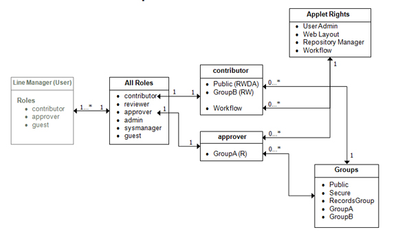
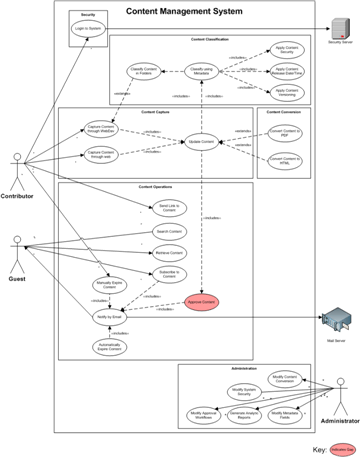
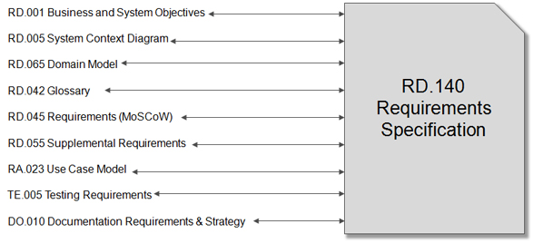

OUM |
WebCenter Supplemental Guide |
||
Method Navigation |
Current Page Navigation |
||
|
|
||||||||
This document contains OUM supplemental task guidance for WebCenter projects.
The task guidelines in this document should be used to supplement the guidelines that appear in the OUM Task Overview.
This is an extremely important task as it outlines the objectives for any project implementing WebCenter. Upon completion of this task, you should have identified all of the organization ’s business and system objectives relevant for your project.
This task should ideally be undertaken as a workshop involving the business, the IT department, and a solution architect. It may also be necessary to involve Project Management at some point in the workshop. Typically, this task could form part of a kick-off event where the business sponsor would provide their goal at the beginning of the workshop in order to get the participants focused. It is recommended that the workshop is undertaken over 2 days, with 1-2 days gap in between – this gap allows the workshop participants to gather additional information and react to topics discussed on the first day. In some cases, various participants may not agree on certain objectives therefore the workshop leader will need to ensure that such discussions should be kept to a minimum and then discussed outside of the workshop. Any decision made outside of the workshop must then be communicated to all workshop participants.
Note: Consider delivering task, Create System Context Diagram (RD.005) within the workshop. This allows the workshop participants to refer to the diagram when reviewing each objective.
Note: It is recommended that the Glossary (RD.042) is completed prior to the workshop. This allows the workshop participants to refer to the definitions and terms when reviewing each objective. It may be necessary to update the Glossary within the workshop as new terms are identified.
It is recommended that you request the business to provide a list of specific measurable objectives and ask them to return these to you in order to prepare the schedule for the workshop (not all information has to be completed). The number of objectives identified by the business will impact the length of the workshop and the time allocated to discuss each item. It is also recommended that you send out the workshop agenda and the initial list of objectives to each participant well in advance so that each participant is clear as to the goal of the workshop and what they need to provide.
The work product format can be any of those recommended within the OUM Method Pack, however, it is recommended to keep the list format simple and understandable. The recommended template for WebCenter is to use the MS Excel version with the following structure:
The formatting of the System Objectives (Tab 5) spreadsheet should clearly identify each objective and the associated information. This will aid in providing the project team with the required information and understanding project scope. The following table indicates the recommended columns for the spreadsheet:
Column |
Description |
|---|---|
Group / Topic |
This value is used to provide a grouping making it easier for the project team to locate a specific objective. |
Objective ID |
This value is essential so that project members can uniquely identify the objective. The value will ultimately be mapped to the requirements in the MoSCoW list (RD.045). |
Objective |
This value is the objective description and must be measurable – try to ensure that you meet the quality criteria set out in the RD.001 Method Pack guidelines. |
Scope |
This value can be used to identify in which part of the project the objective is related i.e. WebCenter Portal or WebCenter Content. This is an optional field and can be used for other purposes. This value can also identify if an objective is moved out-of-scope. |
Source |
This value identifies the source of the objective such as a specific department within the business. This is useful if you require further information about a specific objective. |
Process |
In some cases, the customer may have already mapped out the business processes. This value can be used to identify the related process providing more context. |
Priority |
This value is optional but very useful if the project team needs to provide early prioritization of their objectives. Further prioritization will still be required within the MoSCoW List (RD.045). |
Delivery Method |
In some cases, the solution architect may be able to provide an early indication as to whether the objective can be met out-of-the-box, or through customization. While this value is optional, it can help the business to decide the prioritization against other objectives. |
Complexity |
In some cases, the solution architect may be able to provide an early indication as to the complexity involved in delivering the objective. While this value is optional, it can help the business to decide the prioritization against other objectives. |
Comments |
This column can be used to provide additional information related to the objective, such as, outstanding decisions or further context. |
Note: Try to ensure that each objective is numbered as they will be cross referenced within further documentation (i.e., the MoSCoW List). Also, please try to group the objectives into sensible groups to help locate the information at a later stage.
Note: If a Statement of Work has been provided by the organization that responds to the requirements set out in this task, then this can be used as an input into the workshop.
This task is recommended for all WebCenter projects as it provides the business and the project team with the context of the full system indicating the various inputs and outputs.
This task should be undertaken as early as possible within the project and reviewed on a regular basis. Ideally, this task should be undertaken prior to, or during, the Business and System Objectives (RD.001) workshop as it will allow the participants to refer to the system context while reviewing the system objectives. The work product of this task will form the basis of the Use Case Model (RA.023) and the MoSCoW List (RD.045) where further revisions may be necessary.
Prepare a draft version of the System Context Diagram as soon as you have a basic understanding of the project scope. If you have scheduled an Business and System Objectives (RD.001) workshop, then it is recommended that you have a draft version of this document available in advance.

WebCenter Content System Context Diagram Example
This task requires more than one iteration for WebCenter Content projects in order to capture the metadata and security information using class diagramming techniques.
For the first iteration of this task in Inception, work with the project team to produce:
For the third iteration of this task in Elaboration, conduct a half day workshop involving the business and a product specialist. During the workshop:
Note: It is typically not possible to identify all content types, metadata, security roles, or security groups prior to or during the workshop, however, once this task is started it is easier to refine these models as the project progresses.
Note: The resulting work products from this task will be used to generate the security and metadata model configuration within the Application Setup Documents (DS.030) . Therefore, it is important to undertake this task as early as possible.

WebCenter Content – Metadata (1st Iteration)

WebCenter Content – Metadata (2nd Iteration)

This task is highly recommended for all WebCenter projects. It is essential that a project Glossary be developed as it avoids misinterpretation of WebCenter and business terms.
It is recommended that the Glossary work product contains the following sections:
Refer to the WebCenter Definitions and Terms for a high-level WebCenter Glossary.
Note: It is recommended that this task is completed prior the Business and System Objectives (RD.001) workshop. This allows the workshop participants to refer to the Glossary when reviewing each objective. It may be necessary to update the Glossary within the workshop as new terms are identified.
The MoSCoW List (RD.045) is one of the most important work products for any WebCenter project. It must identify all of the use cases (functional requirements) for the project and their prioritization.
First, you should take the completed Business and System Objectives (RD.001) work product and then convert the objectives into project requirements. You should find that one or more objectives will map to one requirement in the MoSCoW List (see Mapping Objectives to Use Cases table below). It is recommended that you record the Objective IDs for each use case to ensure that you have no gaps, i.e., you haven’t missed any objectives.
| Objective | Use Case |
|---|---|
The system will allow the full text searching of content, i.e., search of text within the content. |
Search for Content |
The system will provide search forms based on content type profiles. |
Once you have listed all of the functional requirements for the project, you should also capture the non-functional requirements (RD.055 - Detail Supplemental Requirements). This is essential to ensure that all project requirements are captured in one place.
Finally, the list of requirements should be completed, reviewed, refined, and approved within a workshop involving the business, the IT department, and a solution architect.
The work product format can be any of those recommended in OUM; however, it is recommended to keep the list format simple and understandable. The recommended template for WebCenter is to use the MS Excel version with the following structure:
The formatting of the RD.045 MoSCoW List tab should clearly identify all functional requirements and the associated information. This will aid in providing the project team with the required prioritization and understanding project scope. The table below indicates the recommended columns for the spreadsheet:
The formatting of the RD.055 Supplemental Requirements tab should clearly identify all non-functional requirements and the associated information. This will aid in providing the project team with the required prioritization and understanding project scope. The table below indicates the recommended columns for the spreadsheet:
| Column | MoSCoW List (RD.045) Description |
Supplemental Requirements (RD.055) Description |
|---|---|---|
MoSCoW ID |
This value is essential so that project members can uniquely identify the functional requirement. | This value is essential so that project members can uniquely identify the non-functional requirement. |
Supplemental Type |
This column is not used for the MoSCoW List. | This value is useful to inform the project team of the nature of the non-functional requirement, e.g., Usability, Supportability, Performance, Security, etc. |
Requirement Name |
This value is essential so that project members can identify the name of the functional requirement. | This value is essential so that project members can identify the name of the non-functional requirement. |
Requirement Description |
This value provides a brief description of the functional requirement. | This value is essential so that project members can identify the name of the non-functional requirement. |
Gap (COTS/Custom) |
This value identifies if the functional requirement cannot be delivered out of the box, i.e., the required functionality cannot immediately be delivered within the WebCenter product. | This value identifies if the non-functional requirement cannot be delivered out of the box, i.e., the required functionality cannot immediately be delivered within the WebCenter product. |
Urgency (Business Criticality) |
This value is provided by the business and identifies how urgent the functional requirement perceived to be – take care when assigning this value as it is common for the business to mark everything with high urgency. This value will form part of the priority analysis. | Column heading should only be Urgency. This value is provided by the project team and identifies how urgent the non-functional requirement perceived to be. This value will form part of the priority analysis. |
Complexity |
This value identifies the complexity of the functional requirement as estimated by the solution architect. This value will form part of the priority analysis. | This value identifies the complexity of the non-functional requirement as estimated by the solution architect. This value will form part of the priority analysis. |
Delivery Estimation |
This value identifies the delivery estimation for the functional requirement as provided by the solution architect. This value will form part of the priority analysis. | This value identifies the delivery estimation for the non-functional requirement as provided by the solution architect. This value will form part of the priority analysis. |
Delivery Method |
This value identifies the anticipated delivery method for the functional requirement as provided by the solution architect. This value will form part of the priority analysis. Recommended values are OOTB (out-of-the-box), Configuration, and Custom – please ensure that you define these values within the project glossary to avoid any confusion. | This value identifies the anticipated delivery method for the non-functional requirement as provided by the solution architect. This value will form part of the priority analysis. Recommended values are OOTB (out-of-the-box), Configuration, and Custom – please ensure that you define these values within the project glossary to avoid any confusion. |
Risk / Impact |
This value is provided by the project team (including the business) and identifies the risk to both the business and the project. This value will form part of the priority analysis. | This value is provided by the project team (including the business) and identifies the risk to both the business and the project. This value will form part of the priority analysis. |
Priority (M/S/C/W) |
This value is essential to provide the prioritization of the functional requirement. Prioritization will help the project team to decide what has to be delivered first within the project. The prioritization value is derived from the Urgency, Complexity, Estimation, Delivery Method, and Risk/Impact values. You may also use the associated business objective(s) priority as a guide. |
This value is essential to provide the prioritization of the non-functional requirement. Prioritization will help the project team to decide what has to be delivered first within the project. The prioritization value is derived from the Urgency, Complexity, Estimation, Delivery Method, and Risk/Impact values. You may also use the associated business objective(s) priority as a guide. |
Scope |
This value can be used to identify in which part of the project the functional requirement is related, i.e., WebCenter Portal or WebCenter Content. This is an optional field and can be used for other purposes. It is recommended that out-of-scope requirements are removed from the MoSCoW List, i.e., do not use these column to mark as out-of-scope. | This value can be used to identify in which part of the project the non-functional requirement is related, i.e., WebCenter Portal or WebCenter Content. This is an optional field and can be used for other purposes. It is recommended that out-of-scope requirements are removed from the MoSCoW List, i.e., do not use these column to mark as out-of-scope. |
Business Process |
This value indicates the process associated with the functional requirement (optional). |
This column is not used for the Supplemental Requirements. |
Owner |
This value is recommended for identifying the current owner of the functional requirement during the project. It can be used in conjunction with the Status, and Comments values. | This value is recommended for identifying the current owner of the non-functional requirement during the project. It can be used in conjunction with the Status, and Comments values. |
Status |
This value is recommended for identifying the current status of the non-functional requirement during the project. It can be used in conjunction with the Owner, and Comments values. | This value is recommended for identifying the current status of the non-functional requirement during the project. It can be used in conjunction with the Owner, and Comments values. |
Comments |
This value can be used to provide additional information related to the functional requirement such as decisions or open issues. It can be used in conjunction with the Status, and Comments values. | This value can be used to provide additional information related to the non-functional requirement such as decisions or open issues. It can be used in conjunction with the Status, and Comments values. |
Objective(s) |
This value identifies the associated objective(s) for the functional requirement. The population of this value is highly recommended for traceability reasons. | This value identifies the associated objective(s) for the non-functional requirement. The population of this value is highly recommended for traceability reasons. |
Note: As you can see from the table above, the recommended columns for both the MoSCoW and Supplemental lists are very similar. Therefore, it is typical for these to be merged into one single list or spreadsheet – with AutoFilter functionality enabled for filtering (available in MS Excel only).
This task is one of the most important tasks for any WebCenter project. The objective is to identify all of the non-functional requirements for the project and their prioritization.
The format of the 'RD.055 Supplemental Requirements' tab or worksheet should clearly identify all non-functional requirements and the associated information. This aids the project team with prioritizing requirements and understanding project scope.
Please see task, Prioritize Requirements (MoSCoW) (RD.045) for further information as both tasks should be developed in parallel.
This task is optional for WebCenter projects; however, it can prove useful in the early stages of any project. It helps provide understanding of factors that will influence the architecture of the system. It also allows the opportunity to develop strategies to address the identified factors and, if a product specialist is available, this can ease concerns over certain product related factors.
This task should ideally be undertaken during the Inception phase as a half day workshop involving business analysts, a system architect and ideally a product specialist. The workshop should consist of the following activities:
The standard OUM work product is suitable for WebCenter projects. Only complete the High-Level Software Architecture section if you have time or it is a requirement of the project.
A Use Case Model (RA.023) should be created for all WebCenter projects that require customization, or enhancement to the system.
If the customer has provided a functional specification then that may be sufficient. It is recommended that the Use Case Model is created at the same time as the MoSCoW List as they are very closely linked.

The Use Case Model should show a structured representation of all of the project use cases with the gaps, within scope, identified as appropriate. Ensure that both the diagram and MS Word work product are completed.
It is also very important to briefly describe the use cases and the actors within the provided OUM work product template. This will avoid much confusion when writing the use cases, and when reviewing the model in the requirements approval process.
You should review this model in conjunction with the MoSCoW List (RD.045) in order to ensure that the all use cases are identified and have the correct relationship to each other. In some cases you may not identify all of the use cases at once, therefore the sign off/approval for the use cases, may come one iteration group at any time, or one package at any time.
Note: The use cases for Content Operations are system white box use cases and have been broken down to a very low level of granularity. These use cases are already realized into the UCM software. As such their level of granularity is appropriate for possible GAP resolutions when customization is required.
Note: For custom development, OUM recommends that CRUD (Create, Read, Update, Delete) use cases be generalized into a single ‘Maintain Content’ Use case, where the main success scenario is performing the ‘Create Content’. The ‘Update Content’, and the ‘Delete Content’ use cases would include the ‘Retrieve Content’, and ‘View Content’ steps.
Whenever the individual scenarios become complex, or may require customization, OUM advocates breaking them out into separate use cases as depicted in the diagram.
The Requirements Specification is recommended for every WebCenter project as it captures all of the requirement information for the project.
RD.140.1 - Create - Consolidate all the requirements into a unique document: the Requirements Specification. This task is only required when it is necessary to have a formal review. it may also be necessary when you must provide it has a major milestone in early iterations of a project. The Requirements Specification can contain both functional and non-functional (i.e., supplemental) requirements.
RD.150.1 - Review - The goal of this task is to remove defects on the requirements via peer review.
The standard OUM work product template is sufficient for most WebCenter projects. The diagram below indicates the recommended work products in Inception that should be linked to or added to the Requirements Specification.

Note: The work products created in other requirement tasks do not need to be duplicated within this document; suitable links to the relevant documents should be placed into the appropriate sections, or insert the other documents as an object.
Note: Although seen as the best way of ensuring that everything is consolidated, inserting work products (children) into other work products (parents) can cause issues with document versioning and document approval. For example, if one of the inserted work products changes, then it will mean updating the revision of not only the child work product but also the parent. Approvers will not want to review a whole parent work product again purely because one of it child work products has changed. However, this can be avoided by identifying revision changes with the parent document.
Note: The requirements specification must be reviewed on a regular basis for all WebCenter projects, as it is common for requirements to change based on new decisions and design issues. Typically, it is recommended to review the requirements specification work product after creating and updating any of the child tasks identified within task RD.140. Refer to the Elaboration phase iteration for this task to see additional guidance.
In this task, all Testing Requirements for the WebCenter project are defined. This covers the requirements for all tests that should be performed in the project from unit testing to user acceptance testing. Refer to the Elaboration phase iteration for this task to see additional guidance.
Identify Testing Requirements from:
It is not necessary to complete the OUM template for this task. You may wish to provide the Testing Requirements within the Supplemental Requirements (RD.055).
This is a core task on WebCenter projects. It is particularly important for projects that have contractually delegated the bulk of the technical architecture responsibility to technical resources (outside the project team) either within the enterprise or to a third-party provider.
The workshop should be conducted as early in the project lifecycle as possible in order to make the enterprise aware of the expectations and requirements associated with their responsibility as well as to share leading practice approaches and experiences for WebCenter implementations.
The goal of this task is to outline the overall requirements for creating documentation and specify the work products to be produced. You also identify the strategy you will use in publishing project-specific documentation.
This task is important for all WebCenter projects. It is not necessary to complete the OUM template for this task. You may wish to provide the requirements within the DO.010 tab of the MoSCoW List (RD.045).
In this task, assess the education and training needs of the project team and user community and plan the delivery of the necessary training based on common areas of responsibility, interests, and skills. This training could be accomplished in classes, through online self-study training, or a combination of both. The types of training needed depend on the requirements of the WebCenter project.
This task is executed in both the Inception and Elaboration phases:

Copyright © 2006, 2016, Oracle and/or its affiliates. All rights reserved.